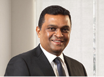
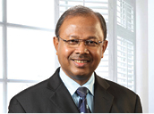
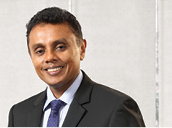
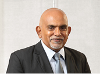
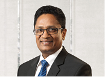
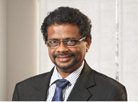
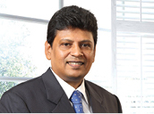
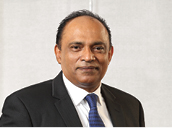
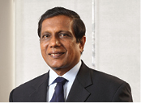

Group Chief Executive Officer, Sri Lanka Telecom
Mr. Dileepa Wijesundera is an engineer by profession and has been a top level executive with extensive experience in project logistics, profitability and restructuring both at private and Government level. He obtained his BSc in Civil Engineering and also obtained an MSc in Management from the Loughborough University (UK). He has successfully been at the helm of many prestigious corporate bodies including Head of Emirates Sky Cargo, Canada, Senior Vice-President Qatar Airways, Chairman, Sri Lanka Ports Authority among others. Mr. Dileepa Wijesundera assumed duties as the Group CEO of Sri Lanka Telecom PLC on 9 March 2015.

Chief Executive Officer, Mobitel (Private) Limited, SLT HumanCapital Solutions (Private) Limited, SLT Campus (Private) Limited
Mr. Ranjith G. Rubasinghe holds a wealth of experience in the fields of Communication and IT in various national and multinational organisations and has been with Sri Lanka Telecom for over 12 years. He is a Chartered Engineer and a Fellow Member who serves as the Vice-President of the Institution of Engineers Sri Lanka (IESL) and is also the Chairman of the Library and Publications Committee. Mr. Rubasinghe also serves as a Council Member of the University of Colombo and the Council of the Board of Management at University of Colombo School of Computing.
With an MBA from the University of Colombo, a Postgraduate Diploma in Engineering and a BSc Engineering in Electrical and Electronics. Mr. Rubasinghe is a certified member of the Sri Lanka Institute of Marketing (SLIM) and an associate member of the Institute of Personnel Management (IPM).
He adds to his diverse portfolio by displaying expertise in ICT Management, Human Resource Management, Marketing and Operational and Financial control.
In 2014, he was appointed as the Chief Executive Officer of Mobitel (Private) Limited and SLT Campus (Private) Limited. Mobitel recorded the best year of performance in 2014 under the guidance of Mr. Rubasinghe where the Company managed to achieve its highest recorded profits in the history of the Company. Mr. Rubasinghe is also the Chief Executive Officer of SLT Manpower Solutions (Private) Limited since 2008. Not limiting to the service provided to SLT Group only, he was able to transform the organisation to SLT Human Capital Solutions (Private) Limited in 2013 with the mission to be the Leading Human Asset Management Partner in Sri Lanka. Moreover he has played the key role in conceptualising and implementing the first ever Engineering Faculty of the country as a University Industry Partnership with the partnership of UGC, UOC and SLT.
He has led SLT Human Capital Solutions to win the award for ‘Excellence in HR through Technology’ at Global HR Excellence Awards 2013, Asia’s Best Employer Brand Award 2012 and award for ‘Best in Recruitment and Consulting’ at Asian Leadership Award 2011. Among his personal achievements, he was awarded Chartered Engineer of the Year 2011 at IESL’s Engineering Excellence Awards and the ‘HR LEADERSHIP AWARD’ at the Global HR Excellence Awards 2010 and 2013.
Chief Executive Officer, SLT Publications (Private) Limited and SLT VisionCom (Private) Limited
Mr. Malraj Balapitiya is a professionally qualified Chartered Engineer and a Fellow Member of the Institute of Engineers of Sri Lanka. He counts over 30 years of work experience at various stratas of the SLT Administration and has swiftly climbed the corporate ladder from Technical Officer to Regional Telecom Engineer, Head of the Province and General Manager prior to his appointment as CEO of SLT Publications (Private) Limited. He is a dynamic personality with managerial, marketing and entrepreneurial skills and has helped Rainbow Pages to reach the highest echelons to become the only directory publisher recognised by the Government of Sri Lanka. In 2011, he was appointed as the CEO of SLT VisionCom (Private) Limited, in addition to his present position of CEO of SLT Publications (Private) Limited. He has used his innate marketing skills and charisma to get the support of SLT network to push PEO TV to greater levels of productivity and make it a viable and dynamic entity that has made a significant impact on the Pay TV industry of Sri Lanka. Today both Rainbow Pages and PEO TV are thriving businesses that earn much needed revenue for the SLT Group.
Chief Executive Officer, SLT Property Management (Private) Limited
Mr. Prabath Gunathunge is a Civil Engineer graduated from University of Moratuwa in 1993. He has been holding senior positions both in the public and the private sector for over 20 years. Prior to his present assignment, with Sri Lanka Telecom, he was the General Manager of Walkers Pilling PLC. Further to that, he has obtained an MBA from Postgraduate Institute of Management in 2000.
Chief Executive Officer, Sri Lanka Telecom (Services) Limited
Mr. Prasanna Perera joined Sri Lanka Telecom (Services) Limited in 2003 as Head of Marketing and was appointed CEO of the Company subsequently. He is a member of Sri Lanka Institute of Marketing (SLIM), Higher National Diploma in Business Management (NIBM), Chartered Institute of Marketing (UK) and has a Master of Business Management from University of Lincoln, UK. Prior to moving to Sri Lanka Telecom (Services) Limited, he served in several senior managerial positions at the Metropolitan Group, EDS Lanka and Lanka Communication Services. During his career spanning 28 years, Mr. Prasanna worked in the ICT industry with his exposure ranging from software development to communication companies and also serving as Visiting Lecturer in marketing and management of some institutions.
Under the leadership of Mr. Prsanna Perera, Sri Lanka Telecom (Services) Limited was transformed into a competitive organisation in the field of ICT and won many local and international prestigious awards from world recognised ICT Brands, in the year 2014.
Chief Executive Officer, Sky Network (Private) Limited
Mr. Mahinda Herath is a Chartered Engineer holding a Degree in Engineering from University of Moratuwa and a Masters in Industrial Mathematics from University of Sri Jayawardenepura. In a career spanning over 30 years in the SLT Group, he has gained multi-disciplinary exposure in the fields of engineering, management, regulation and business; having previously held positions such as Engineer, Deputy General Manager, Head of Province and General Manager Regulatory Affairs and International Business apart from the wide-ranging technical and managerial training he has received from reputed international Operators such as Telia AB of Sweden, France Telecom, AT&T of USA and KDD of Japan, he has also gained certifications in Telecommunication Regulation from Commonwealth Telecommunications Organisation (CTO), Australian Communication and Media Authority (ACMA) and University of Florida. He has also been involved in the activities of ITU study groups, Sri Lanka Association for the Advancement of Science (SLAAS) and International Development Research Centre (IDRC), with several research papers and a book chapter to his credit. Mr. Mahinda is currently spearheading two key projects in SLT; namely the fixed TD-LTE roll-out and the carrier-grade Wi-Fi roll-out.

Chief Administrative Officer
Joined SLT in 1982, armed with a BSc from the University of Moratuwa in Electronics and Telecommunications. He is a Chartered Engineer with a Postgraduate Diploma in Marketing from the CIM (UK) and a Fellow and a Past Council Member of the Institution of Engineers, Sri Lanka, a member of IET (UK) and CIM (UK) and also a Competent Toastmaster.
He has experience in areas such as regional management, project management, technology strategy formulation and execution, technical operation, technical evaluation, marketing management and Company transformation. He has led special Company-wide cross-functional teams on ‘productivity improvement’ and ‘paradigm shift’ in SLT such as 5S and Breakthrough Thinking.

Chief Business Strategies Officer (Subsidiaries)
Joined SLT in 2010 as Chief Marketing Officer. He holds a Postgraduate Diploma in Marketing - CIM UK and is a Chartered Marketer - CIM UK. He is also a Fellow of Chartered Institute of Marketing (FCIM) - CIM UK, and a member of The Sri Lanka Institute of Marketing (MSLIM). He holds a Masters in Business Studies from the University of Colombo. He is a member of the Advisory Board of CMO Council, Asia Pacific Region. Currently, reading for PhD in Management and Business Studies at University of Colombo. He is a veteran in the field of Marketing with over 21 years of practice in the entire spectrum of Marketing and Sales Management in both Multinational and Blue Chip Companies in Sri Lanka. He has exposure in Marketing Communications, Distribution Channel Development and Management, Product Development and Management, Communication Channel Management, Market Activation, Market Research, Contact Centre Operations, Brand Management and Sales. He has cross industry experience covering FMCG, Consumer Durables, Telecommunications both Fixed and Mobile categories in Sri Lanka. He was a member of the Panel of Judges for SLIM Brand Excellence Awards 2013. Prior to joining SLT, he served as General Manager - Marketing at Mobitel where his aggressive strategic marketing leadership contributed towards the Company becoming the second largest mobile operator within a short span of 3 years.

Chief Corporate Officer
Joined SLT in 1984 as an Engineer. He holds a BSc (1983) in Electronics and Communication from the University of Moratuwa and an MBA from the PIM of the University of Sri Jayawardenepura. He has also completed a Postgraduate Diploma in Marketing from the CIM (UK) and is a Chartered Marketer cum Chartered Engineer with membership of the Institution of Engineers, Sri Lanka and CIM (UK). He is also a Toastmaster.
Chief Enterprise and Wholesale Officer
Joined SLT in 1994. He holds a MEng from University of Moratuwa in Electronics and Telecommunications Engineering and a Chartered Engineer of the Institute of Electrical Engineers and Engineering Council (UK). He has experience in International Transmission Systems, Submarine Cable Systems, Data and IP Networking and Project Management. He has experience in dealing with Enterprise and Government customers over the last 12 years and was instrumental in introducing Metro Ethernet Technology to Sri Lanka. He has provided voice-data integrated enterprise solutions connected with high speed resilient connectivity services to many customers.
Chief Financial Officer
Is a Member of the Association of Chartered Certified Accountants, United Kingdom and a Member of the Chartered Institute of Management Accountants, United Kingdom. He has worked in companies such as Richard Pieris PLC a diversified conglomerate, Lanka Ashok Leyland PLC a heavy commercial vehicle manufacturer, Noritake Limited of Japan one of the world’s largest porcelainware producers, Ferrero Limited a Luxembourg-based company which is one of the world’s largest chocolate manufacturers and at Ceat Kelani Holdings Limited the leading tyre manufacturer of Sri Lanka. Before joining SLT he held the position of Group General Manager - Finance for the Ceat Kelani Holdings Limited group of companies. He has over 25 years of finance experience gained both locally and internationally.

Chief Information Officer
Joined SLT in 1982 and served as Head of the Billing Division in 2001 and became CIO of SLT in 2005. He is a member of the Institution of Engineers, Sri Lanka (C.Eng.), IIESL, IET (UK) and CSSL. He has been engaged in major IT projects to provide the strategic IT road map for SLT. As Programme Manager he implemented the Integrated OSS, BSS and in the recent past it was integrated with CRM system by him, as a Project Director.

Chief Innovation Officer
Mr. Tilak De Silva joined SLT in 1984 and has more than 30 years of experience in the IT and Communication fields. He was a pioneer in transforming the SLT to an IT enabled company. He has gained multidisciplinary exposure in the fields of engineering, information technology and global telecom business; he has held the key positions of Head of IT, Chief Global Officer, Chief Network Officer and Advisor to CEO on Technology Strategies at SLT. He has also held the position of CEO SLT Hong Kong which was a subsidiary of SLT. Mr. De Silva holds a Bachelor of Science Degree in Engineering (Specialising in Electronics and Telecommunications Engineering) from the University of Moratuwa and a Master of Science Degree in Data Communication from Brunel University - UK. He is a Chartered Engineer and a Chartered IT Professional. He has held the prestigious national figure of President of the Institution of Engineers Sri Lanka (IESL) in the year 2013. He has gained the professional memberships of FIE (SL), FIET (UK), FBCS (UK) and MIEEE (USA).

Chief Marketing Officer
Joined SLT in 1993. He holds a BSc (1987) in Electronics and Telecommunications from the University of Moratuwa and has obtained the Postgraduate Diploma in Industrial Engineering from OUSL. He has an MBA from the University of Sri Jayawardenepura. He is a Chartered Engineer and is a member of the Institution of Engineers, Sri Lanka. He brings with him over ten years of marketing experience.
Chief Network Officer
Joined SLT in 1991. He has a BSc Eng. in Electronics and Telecommunications from the University of Moratuwa and an MBA from the University of Sri Jayawardenepura. He is a Chartered Engineer and a Fellow Member of the Institute of Engineers, Sri Lanka with 23 years of experience in operations, maintenance, project management, customer service and marketing. He also serves as Director of Sri Lanka Telecom (Services) Limited. He was a resource person for many institutes such as TTI, IPM, etc.

Chief Regional Officer
Joined SLT in 1984 and served as Regional Head in 2001 and became Chief Regional Officer of SLT in 2010. He obtained Graduate membership of Radio and Electronic Engineers (London, UK) and became a Chartered Engineer of the Institution of Electrical Engineers (London, UK). He is a Member of the Association of Professional Engineers Scientists and Managers Associations in Australia and holds an MBA (Technical Management) from La Trobe University of Australia. He has wide experience in the telecommunications industry, in areas such as operations, maintenance, sales, marketing, customer service, quality management and project management.

Chief Transformation and Development and Human Resource Officer
Joined SLT as an Engineer in 1984. He holds a BSc in Electronics and Telecommunication from University of Moratuwa (1983). He is a Chartered Engineer and a Fellow Member of the Institution of Engineers, Sri Lanka. He brings with him experience in the Emirates Telecommunication Company from 1989-1991.